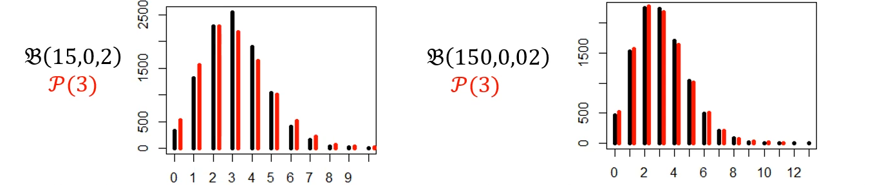

Principale limitation du modèle linéaire : l’hypothèse des observations indépendantes = indépendance des résidus
Observations doivent rester indépendantes après avoir été ajustées pour les prédicteurs fixes (âge, sexe)
Par ex : “patients-trimestres” : ce sont les mêmes patients qui sont mesurés à plusieurs reprises
Problème : en pratique, il existe bcp de situation ou c’est pas raisonnable
patients d’un essai clinique sont inclus dans plusieurs centres : deux patients d’un même centre se ressemblent plus que deux patients de centres différents
méta-analyse vise à synthétiser les résultats de plusieurs essais thérapeutiques
unité statistique est la “visite” d’un patient dans un service, mais le même patient peut revenir plusieurs fois
la même mesure biologique est répétée plusieurs fois chez un même individu (données longitudinales)
Conséquence principale : le nombre de patients “effectif” est plus petit que la taille de la base de données \(\rightarrow\) inflation de l’erreur de type 1
2.1 Quelques stratégies pour gérer la non-indépendance des observations
Ignorer l’effet centre / le caractère longitudinal
Par ex : 4 visites pour 1 patient = 1 seul patient
Problème : perte d’information donc perte de puissance
Estimer un modèle par centre / par patient et “combiner” les estimations
Problème : pas de quantification de la variabilité inter-centres / inter-patients
Incorporer le centre / le patient comme effet fixe (c’est à dire comme une variable catégorielle / un facteur)
Problème : perte de puissance, pas de quantification de la variabilité inter-centres / inter-patients, impossible si bcp de centres avec peu de patients par centre
Combine des effets fixes : covariables qui ont une influence sur la moyenne dont on veut estimer l’effet
et des effets aléatoires : variables qui modélisent la structure de corrélation entre les observations (rendent compte de la non-indépendance des observations)
Effets aléatoires : “covariables latentes” qui ne sont pas observées mais qui influencent la variable réponse
(par exemple \(\rightarrow\) le fait que les patients d’un même centre se ressemblent plus que des patients de centres différents)
\(Y_{ij}\) : réponse (quantitative) pour l’observation du patient \(j\) issu du cluster \(i\) (par ex : mesure biologique au temps \(j\) pour le patient \(i\))
\(\beta X_{ij}\) : effet fixe (unique ici) dépendant de la variable \(X_{ij}\) (âge, sexe, traitement, etc.)
\(\gamma_1 Z_{ij}\) : effet aléatoire dépendant de la variable \(Z_{ij}\) (par ex : centre, patient, etc.). Le coefficient \(\gamma_1\) est commun à tous les patients du cluster \(i\)
\(\epsilon_{ij}\) : erreur aléatoire (résidu) pour l’observation du patient \(j\) du cluster \(i\) (dont on fait l’hypothèse qu’elle suit une loi normale centrée réduite \(N(0,\sigma^2)\))
L’effet aléatoire \(\gamma_i\) n’est pas observé, il faut spécifier sa loi (\(\gamma_i \sim N(0,\sigma^2_Z)\))
Ainsi, 2 patients du même cluster \(i\) se ressemblent plus que 2 patients de clusters différents car ils partagent la même valeur de l’effet aléatoire \(\gamma_i\)
\(\rightarrow\) permet de rendre compte de la non-indépendance des observations sur les patients d’un même cluster \(i\)
2 applications possibles :
Estimer les effets fixes et prendre en compte la non-indépendance des observations (plusieurs visites par patient, patients dans des centres différents, etc.)
Estimer séparément les composantes de la variance (variabilité intra-cluster et inter-cluster)
des effets fixes \(\beta\) et leur incertitude (binaire, catégorielle avec catégorie de référence…) (comme dans un modèle linéaire classique)
des composantes de la variance :
variance de l’effet aléatoire : \(\sigma_Z^2\) et son incertitude (variabilité inter-cluster)
variance résiduelle : \(\sigma^2\) et son incertitude
Avec des modèles plus complexes, il peut y avoir plusieurs effets aléatoires avec une structure de corrélation plus complexe entre eux (matrice de variance-covariance)
Note
Exemple : questions à un examen (items) posées à des étudiants (individus)
Caractéristiques des questions (difficulté, type de question, etc.) = effets aléatoires
Caractéristiques des étudiants (niveau, sexe, etc.) = effets aléatoires
= Croisement des deux effets aléatoires
Corrélation intra-questions (les réponses aux questions se ressemblent plus entre elles que les réponses à des questions différentes)
Corrélation intra-étudiants (les réponses d’un étudiant se ressemblent plus entre elles que les réponses de différents étudiants)
C’est différent de patients inclus dans des centres (effet emboîté)
Patients 1 traité dans un centre A
Patient 2 traité dans un centre B
Donc les effets sont emboîtés car un patient n’est traité que dans un seul centre
2 types d’estimateurs possibles :
Maximum de vraisemblance (ML)
Maximum de vraisemblance restreint (REML) = option par défaut dans R
key, value = Names of new key and value columns, as strings or symbols. This argument is passed by expression and supports quasiquotation (you can unquote strings and symbols).
... = A selection of columns. If empty, all variables are selected. You can supply bare variable names, select all variables between x and z with x:z, exclude y with -y.
na.rm = If TRUE, will remove rows from output where the value column is NA.
convert = If TRUE will automatically run type.convert() on the key column.
factor_key = If FALSE, the default, the key values will be stored as a character vector. If TRUE, will be stored as a factor, which preserves the original ordering of the columns.
Pour gérer les données manquantes : pas grave si elles sont MAR. R gère automatiquement les données manquantes en utilisant toutes les données disponibles pour chaque individu (approche “full information maximum likelihood” FIML)
3.2.1 Utilisation de la fonction lmer() du package lme4
response = Variable dépendante numérique (ce que le modèle cherche à prédire).
fixed_effects = Effets fixes, c’est-à-dire les variables explicatives dont on estime un coefficient unique pour l’ensemble de la population.
on met 1 s’il n’y a pas de covariable (ici pas d’effet fixe = intercept seul)
(random_intercept | grouping_factor_1) = Effet aléatoire spécifiant un intercept propre à chaque niveau du facteur grouping_factor_1.
grouping_factor_1 = variable sur laquelle on veut modéliser un effet aléatoire (par ex : patient, centre, etc.)
random_intercept = indique qu’on modélise un intercept qui varie selon les niveaux de grouping_factor_1 (c’est à dire un coefficient qui soit différent pour chaque niveau de grouping_factor_1, donc pour chaque patient, centre, etc..)
(random_intercept | grouping_factor_2) = Deuxième effet aléatoire, indépendant du premier, avec un intercept variant selon grouping_factor_2.
data_frame = Jeu de données contenant toutes les variables utilisées dans le modèle.
REML = Argument logique indiquant si l’estimation doit utiliser REML (TRUE) ou ML (FALSE).
Par défaut, REML = TRUE donc pas besoin de le spécifier
library(lme4)fitl <-lmer(distance ~1+ (1| id), data = dental_long, REML =TRUE)summary(fitl)
Linear mixed model fit by REML. t-tests use Satterthwaite's method [
lmerModLmerTest]
Formula: distance ~ 1 + (1 | id)
Data: dental_long
REML criterion at convergence: 515.4
Scaled residuals:
Min 1Q Median 3Q Max
-3.2400 -0.5277 -0.1073 0.4732 2.7687
Random effects:
Groups Name Variance Std.Dev.
id (Intercept) 3.752 1.937
Residual 4.930 2.220
Number of obs: 108, groups: id, 27
Fixed effects:
Estimate Std. Error df t value Pr(>|t|)
(Intercept) 24.0231 0.4297 26.0000 55.91 <2e-16 ***
---
Signif. codes: 0 '***' 0.001 '**' 0.01 '*' 0.05 '.' 0.1 ' ' 1
Vraisemblance restreinte à l’estimation des paramètres : 515.4 (difficile à interpréter)
Information sur les résidus (Scaled residuals) : min, 1er quartile, médiane, 3ème quartile, max
Informations sur les effets aléatoires :
Random effects :
Nombre d’observations : 108
Nombre de groupes (patients) : 27
2 effets aléatoires pour lesquelles la variance est rapportée
id (Intercept) : variance de l’effet aléatoire = patient = \(\sigma^2_Z\) = 3.752
Fixed effects :
Moyenne estimée : 24.0231
Erreur standard de la moyenne estimée : 0.4297
Pas de p-value associée (pas de test statistique par défaut dans R pour les effets fixes dans les MLM)
Les deux variances estimées (résiduelle et effet aléatoire) permettent de quantifier la variabilité intra- et inter-cluster.
La variabilié résiduelle est du même ordre de grandeur que la variabilité inter-patients.
On a donc raison d’utiliser ce modèle pour estimer la moyenne car il y a une forte variabilité entre patients, quasiment du même ordre de grandeur que la variabilité résiduelle !
3.2.2 Utilisation de la fonction lme() du package nlme
Exemple : varIdent(form = ~ 1 | sexe) pour autoriser une variance différente selon le sexe.
subset = Sous-ensemble des lignes utilisées.
Exemple : subset = age > 10 pour ne garder que certains individus.
method =Méthode d’estimation : "REML" ou "ML".
Exemple : utiliser "ML" si l’on compare des modèles à effets fixes différents.
na.action = Comportement en présence de valeurs manquantes.
Par défaut : na.fail (le modèle s’arrête si NAs).
control = Paramètres de contrôle de l’algorithme d’estimation.
Exemple : control = lmeControl(msMaxIter = 200) pour augmenter le nombre d’itérations.
contrasts = Choix des contrastes pour les variables catégorielles.
Exemple : définir des contrastes spécifiques pour un facteur.
keep.data = Indique si le jeu de données doit être conservé dans l’objet modèle. Utile pour réutiliser l’objet plus tard.
fit2 <-lme(fixed = distance ~1, data = dental_long, random =~1| id, method ="REML")summary(fit2)
Linear mixed-effects model fit by REML
Data: dental_long
AIC BIC logLik
521.3618 529.3803 -257.6809
Random effects:
Formula: ~1 | id
(Intercept) Residual
StdDev: 1.937002 2.220312
Fixed effects: distance ~ 1
Value Std.Error DF t-value p-value
(Intercept) 24.02315 0.4296606 81 55.91192 0
Standardized Within-Group Residuals:
Min Q1 Med Q3 Max
-3.2400448 -0.5277439 -0.1072888 0.4731815 2.7687301
Number of Observations: 108
Number of Groups: 27
Formula : donne des écarts-types (StdDev) pour l’effet aléatoire (Intercept) et pour les résidus (Residual) (et pas des variances comme avec lmer) (pour passer de l’un à l’autre, il faut faire variance = StdDev²)
StdDev de l’effet aléatoire (Intercept) = 1.937002 \(\rightarrow\) variance de l’effet aléatoire = 3.752 (même valeur que précédemment avec lmer)
StdDev des résidus (Residual) = 2.220312 \(\rightarrow\) variance résiduelle = 4.930 (même valeur que précédemment avec lmer)
Distance moyenne estimée = 24.02315 (même valeur que précédemment avec lmer).
Interprétation = la distance moyenne dentaire chez les enfants est estimée à environ 24.02 unités.
3.2.3 Exemple 3 : ‘lmerTest’ : obtention de p-values pour les effets fixes
Utilisation de la fonction lmer() du package lmerTest (extension de lme4)
Le fait d’importer la library lmerTest remplace automatiquement la fonction lmer() de lme4 par celle de lmerTest qui fournit des p-values pour les effets fixes.
Ici : fit3 <- lmer(distance ~ time + (1 | id), data = dental_long, REML = TRUE)
En gros, on veut estimer l’effet moyen de l’âge (time) sur la distance dentaire en prenant en compte la non-indépendance des mesures répétées chez un même enfant (id)
library(lmerTest)fit3 <-lmer(distance ~ time + (1| id), data = dental_long, REML =TRUE)summary(fit3)
Linear mixed model fit by REML. t-tests use Satterthwaite's method [
lmerModLmerTest]
Formula: distance ~ time + (1 | id)
Data: dental_long
REML criterion at convergence: 443.2
Scaled residuals:
Min 1Q Median 3Q Max
-3.7376 -0.5248 0.0153 0.4027 3.7212
Random effects:
Groups Name Variance Std.Dev.
id (Intercept) 4.465 2.113
Residual 2.078 1.442
Number of obs: 108, groups: id, 27
Fixed effects:
Estimate Std. Error df t value Pr(>|t|)
(Intercept) 22.1852 0.4923 43.3911 45.066 < 2e-16 ***
timey10 0.9815 0.3924 78.0000 2.501 0.0145 *
timey12 2.4630 0.3924 78.0000 6.277 1.80e-08 ***
timey14 3.9074 0.3924 78.0000 9.958 1.52e-15 ***
---
Signif. codes: 0 '***' 0.001 '**' 0.01 '*' 0.05 '.' 0.1 ' ' 1
Correlation of Fixed Effects:
(Intr) timy10 timy12
timey10 -0.399
timey12 -0.399 0.500
timey14 -0.399 0.500 0.500
3 coefficients estimés : la variable timea été exprimée comme une variable catégorielle avec 4 modalités (8, 10, 12 et 14 ans) avec 8 ans comme catégorie de référence
timey10 = différence moyenne estimée entre 10 ans et 8 ans = 0.9815 (p-value = 0.0145)
timey12 = différence moyenne estimée entre 12 ans et 8 ans = 2.4630 (p-value = 1.80e-08)
timey14 = différence moyenne estimée entre 14 ans et 8 ans = 3.9074 (p-value = 1.52e-15)
La library lmerTest fournit des p-values relativement valides y compris avec une estimation REML (mais pas parfaite non plus).
Aussi !! La variance et l’écart-type ont ÉVOLUÉS : elles sont différentes de celles des modèles précédents car on a ajouté un effet fixe time dans le modèle.
C’est comme si on avait “ignoré” la variabilité expliquée par l’âge dans les modèles précédents (sans time), donc la variabilité résiduelle diminue.
On a donc diminué la variabilité individuelle (résiduelle) en expliquant une partie de cette variabilité par l’âge.
Donc la variance expliquée par le patient compte à peu près pour 68.2% de la variance totale (après avoir ajusté pour l’âge)
Avoir le minimum de variance résiduelle possible est important pour avoir des intervalles de confiance les plus précis possibles sur les effets fixes.
3.2.4 Pertinence de la variable time globale dans le modèle
On pourrait faire un rapport de vraisemblance entre :
Modèle complet avec time : fit3 <- lmer(distance ~ time + (1 | id), data = dental_long, REML = TRUE)
Modèle sans time : fitl <- lmer(distance ~ 1 + (1 | id), data = dental_long, REML = TRUE)
Le problème c’est qu’on a fitté les deux modèles avec REML (par défaut dans R) donc on ne peut pas faire de test de rapport de vraisemblance, parce que les vraisemblances restreintes ne sont pas comparables entre deux modèles avec des effets fixes différents.
On peut donc faire avec anova() qui utilise une approximation de Satterthwaite pour calculer une p-value globale pour la variable time
anova(fit3)
Type III Analysis of Variance Table with Satterthwaite's method
Sum Sq Mean Sq NumDF DenDF F value Pr(>F)
time 237.19 79.064 3 78 38.04 2.986e-15 ***
---
Signif. codes: 0 '***' 0.001 '**' 0.01 '*' 0.05 '.' 0.1 ' ' 1
p-value globale pour la variable time < 2.2e-16 \(\rightarrow\) la variable time est globalement significative dans le modèle
Il faut donc bien mettre un effet fixe time dans le modèle et il y a un effet significatif de l’âge sur la distance dentaire chez les enfants.
3.2.5 Pertinence de la variable sex dans le modèle
sex est une variable binaire donc c’est différent!
On peut faire un test de Wald car on ne compare pas des vraisemblances restreintes entre deux modèles différents.
4 Applications (études publiées)
4.1 Déclin cognitif des personnes âgées aux États-Unis pendant et après la Covid !!

= Déclin cognitif des personnes âgées aux États-Unis pendant et après la Covid
Données longtitudinales
Patients de 50 ans ou plus
3 périodes d’observation :
Avant 1ère vague (jusqu’au 29 février 2020)
Pendant 1ère vague (1er mars 2020 - 28 février 2021)
Seconde vague (1er mars 2021 - 28 février 2022)
NB : si on avait eu 2 temps : avant et après la 1ère vague, on aurait pu faire une analyse en différences de différences, c’est à dire en faisant juste la différence pour chaque patient, qui permet de retrouver des mesures indépendantes
Ont utilisé un modèle linéaire mixte pour modéliser le déclin cognitif en fonction du temps (avant, pendant, après la 1ère vague)
4.2 Analyse statistique
Scores cognitifs assignés à trois périodes : pré-pandémie, année 1, année 2.
Modèle mixte linéaire :
score cognition = à gauche comme outcome (quantitatif) = \(Y_{ij}\)
Effets aléatoires individuels patients ajoutés (variation propre à chaque participant) : \((1 | id)\) = \(\gamma_1 Z_{ij}\)
Covariables : âge (continu), sexe — facteurs connus pour influencer la cognition : \(\beta X_{ij}\)
Modèle utilisé pour estimer les différences entre moyennes selon les années pandémie.
Analyses incluant les participants manquants à une ou deux périodes (tests t).
Packages utilisés : lmer, emmeans.
Résultats rapportés en Cohen’s d effect sizes + IC 95 % + p-values.
Ils auraient pu rapporter des coefficients de régression (qui s’interprète comme une différence de moyenne dans un modèle linéaire)
Le problème : c’est que les scores cognitifs n’ont pas d’unité claire (ils sont composites) donc difficile d’interpréter une différence de moyenne en “unités de score cognitif”
Par exemple : une différence de moyenne de -3 unités de score cognitif entre avant et année 1 : est-ce que c’est beaucoup ? peu ? comment savoir ?
Effect size de Cohen = (moyenne groupe 1 - moyenne groupe 2) / écart-type pooled = coefficient rapporté à l’écart-type en population = pas d’unité
Objectif = ADIMENSIONNER le coefficient
on met donc en rapport la différence de score avec la dispersion des scores entre les patients
Si tu veux une version encore plus condensée ou orientée “méthodes stats”, je peux le faire.
4.3 Résultats
0,15 : déclin (devrait être un signe négatif en vrai)
ne correspond pas à un nombre de points
correspond à “0,15 écarts-types en dessous à l’année 1 par rapport à l’année 0”
5 Modèles linéaires mixtes : extension
5.1 Modèles non linéaires mixtes (NLMM)
Exemple : évolution d’un biomarqueur
Modèle non linéaire (exponentiel, logistique, etc.)
Incorporation d’effets aléatoires (patient, centre, etc.)
Estimation des paramètres fixes et des composantes de la variance
Différence avec un modèle linéaire mixte : la relation entre la variable dépendante et les covariables n’est pas linéaire.
Donc ça ne s’interpète pas comme une différence de moyenne mais comme un paramètre de croissance, une constante de temps, etc.
5.2 Modèles linéaires généralisées mixtes (GLMM)
Exemple : logistique mixte
Variable dépendante binaire (oui/non)
Incorporation d’effets aléatoires (patient, centre, etc.)
Estimation des paramètres fixes (odds ratios) et des composantes de la variance
Différence avec un modèle linéaire mixte : la variable dépendante n’est pas quantitative et suit une loi de probabilité d’une famille exponentielle (binomiale, Poisson, etc.)
Donc ça ne s’interpète pas comme une différence de moyenne mais comme un odds ratio, un risque relatif, etc.